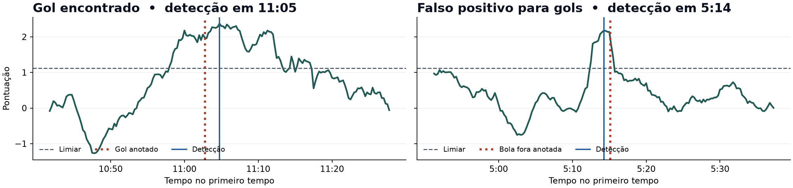

A voz do narrador como atalho para os melhores momentos de uma partida
Felipe Orlow, Pedro Augusto, Murilo Uchôa e Gustavo Barros
INF0413 · Signal and Image Processing · 13/11/2026
Buscamos instantes em que a narração, a torcida ou outros sons da transmissão reagem a um lance.
Dois lotes de seis jogos. A divisão oficial de validação do SoccerNet tem 100 partidas anotadas.
Xiong et al. (2003) · Vanderplaetse e Dupont (2020) · Deliège et al. (2021)
2 / 8Áudio mono a 16 kHz e filtro de 300 a 3.400 Hz
Intensidade RMS pela STFT e frequência fundamental por pYIN
Volume normalizado com um bônus limitado quando o tom sobe
Pico de um trecho de pelo menos 2 s acima do limiar
Associamos cada pico a até um gol anotado, com tolerância de ±15 s. Medimos precisão, revocação e F1.
O limiar é o percentil 98 da pontuação suavizada dentro de cada tempo de jogo.
3 / 8Regra de volume com bônus de tom. Todas as detecções. Tolerância de ±15 s.
| Lote | Gols encontrados | Detecções | Precisão | Revocação | F1 |
|---|---|---|---|---|---|
| Primeiro | 22 de 36 | 115 | 19,1% | 61,1% | 0,291 |
| Segundo | 14 de 19 | 111 | 12,6% | 73,7% | 0,215 |
Ao usar os três picos mais fortes de cada tempo, a precisão sobe para 38,9% e 27,8%, e a revocação cai para 38,9% e 52,6%.
Seis jogos por lote. Métricas calculadas sobre as contagens de cada lote.
4 / 8
Burnley 0 × 1 Arsenal, 11/04/2015 · Áudio e anotações do SoccerNet
5 / 8Trechos de 5 s, com rótulos obtidos dos timestamps do SoccerNet.
Comparar atributos acústicos com vetores da PANNs CNN14 de 16 kHz.
Treinar com jogos separados e incluir casos difíceis, como finalizações e picos da torcida.
Medir precisão, revocação e F1 nos mesmos jogos de validação, com a mesma tolerância do Nível 0.
Kong et al. (2020) · PANNs foi pré-treinada no AudioSet.
6 / 8Proposta revisada e Nível 0 em 12 jogos
Resultados parciais do classificador acústico e andamento do PANNs
Comparação dos métodos e demonstração de clipes